| Last updated: Exalt Version 5.12.0.0 (June 2025) |
|---|
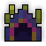 Music: Sunken Music: Sunken
|
| Dust Drops | ||
|---|---|---|
| 27-33 |
34-40 |
0 |
Davy Jones’ Locker is a medium-high difficulty dungeon that is a source of Potions of Wisdom, Potions of Attack, and the Ghostly Trickster UT Set.
This dungeon is meant for high level players (Suggested level: 20 and Defense Maxed), because the boss has high damage piercing bullets that inflict the Bleeding status effect.
The portal to Davy Jones’ Locker has a chance to drop from Abyssal Hydra. It is also guaranteed to drop from Ghost Ship and Well of Souls.
Despite being underwater (according to the Realm Eye lore below), players do not have limited oxygen in this area and cannot die by suffocation, unlike in other underwater areas such as the Ocean Trench and Cnidarian Reef.
This dungeon must be completed to earn ‘Explosive Journey‘, ‘Conqueror of the Realm‘, ‘Hero of the Nexus’ and ‘Realm of the Mad God’ fame bonuses.
| The Realm Eye says: |
|---|

The sunken wreckage of Davy Jones’ former flagship is still guarded by the ghosts of his loyal crew. To protect their captain and his plundered loot, Davy’s pirates locked most of the ship’s cabins before fully submerging. Davy Jones’ watery grave was the push Oryx needed to convince other sailing marauders to take him seriously. The high seas have been his ever since. |
The Davy’s Key is available in the Nexus for 100  .
.
See the Davy Jones’ Locker Guide for a complete walk-through on the dungeon and all its enemies.
To fight the boss, the player must find 4 keys: a blue, green, red and yellow key, in that order. The keys can be found throughout the dungeon. The blue key will be in the starting room, the green key behind a blue door, the red key behind a green door, the yellow key behind a red door, and the boss behind a yellow door. After collecting each key, doors of that color will be unlocked (they can be opened by walking into them). For example, once the blue key is found, the blue doors will be unlocked. Once the final key is collected, the boss room door will be unlocked. Note that there are extra yellow rooms to clear for a chance at a purple bag which can contain Ghost Rum.
Every normal room that doesn’t have a key in it has a chance to have Sunken Treasure in it.
  Ghost Lantern |
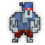 Ghost Pirate Sr |
 Ghost of Roger |
 Ghost Ship Rat |
| 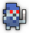 Lil’ Ghost Pirate |
 Lost Soul |
 School of Ghostfish |
Violent Spirit |
 Zombie Pirate Jr |
 Zombie Pirate Sr |
The boss room is octagonal in shape, and has a smaller octagon of lanterns in the middle. Davy Jones is invulnerable until all of the lanterns are lit up by attacking them. Afterwards, Davy will turn vulnerable and attack, and then float back into the middle of the room. You must relight the lanterns to attack him again. Once he is dead, minions will keep spawning so it is a good idea to quickly grab your loot and leave.
| Item | Drops From |
|---|---|
 |
Davy Jones |
 |
Davy Jones, Sunken Treasure, Lil’ Ghost Pirate, Violent Spirit |
 |
Davy Jones |
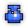 |
Davy Jones, Sunken Treasure |
 |
Davy Jones |
| 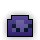 | Davy Jones, Sunken Treasure |
| 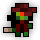 | Davy Jones |
 |
Davy Jones |
  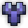 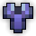 |
Davy Jones, Sunken Treasure |
Historical Drops |
|
| 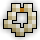 | Davy Jones |
 |
Davy Jones |
Davy Jones’ Locker is part of the Mighty Quest pool from The Tinkerer and has five associated quests.
| Name | Description | Items Needed | Reward |
|---|---|---|---|
| The Ghost Pirate | Defeat Davy Jones on his Ghost Ship. | |
 |
| Unsettling Foes | Defeat these creepy combatants for a prize! |   |
|
| Thar be Pirates! | Avast! Clear out the pirate presence in the realm! |  |
|
| Lost and Found | People say some things are best left forgotten. I heartily disagree! | 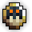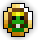 |
|
| Ocean Man | With how vast the realm is, you’d think Oryx wouldn’t care for the high seas. |  |
Davy Jones’ Locker was added to the game in Build 123.4.1 (Aug 2012) and introduced a new game mechanic that was the keys with their new UI, which would stay visible after completing the dungeon and even exiting the dungeon. The only way to get rid of the key UI for many years was to restart the game client.
In Exalt Version 5.4.0.0 (Nov 2024), the 4 keys within this dungeon were given unique shapes for their sprites in order to help colorblind players distinguish the keys from each other. Before this update, the keys had the following sprites:
Before Exalt Version 5.11.0.0 (May 2025), dungeon completion gave 34-78  with 60% chance.
with 60% chance.
Before Exalt Version 5.12.0.0 (June 2025), dungeon completion gave 24-30  and 22-28
and 22-28  .
.
“Davy Jones’ Locker” is a metaphor for the bottom of the ocean.

{kind=link}